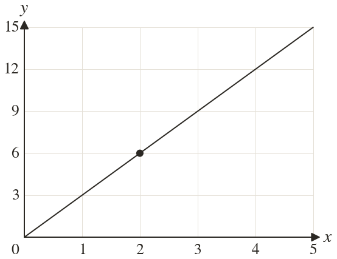
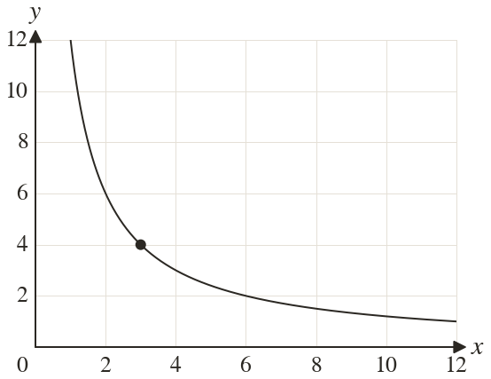
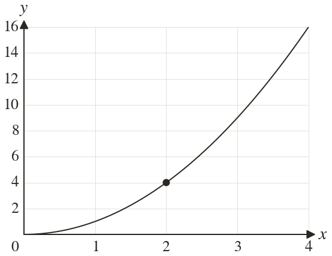

Westonbirt Maths · Algebraic Direct and Inverse Proportion
Proportion Notation and Graphs
Name: ______________________ Date: ____________
1
Which proportion does the graph show? Find
2
Which proportion does the graph show? Find
3
Which proportion does the graph show? Find
4
A graph of y ∝ passes through Find
5
A graph of y ∝ passes through Find
Ext
Does show direct proportion? Explain using its graph.


